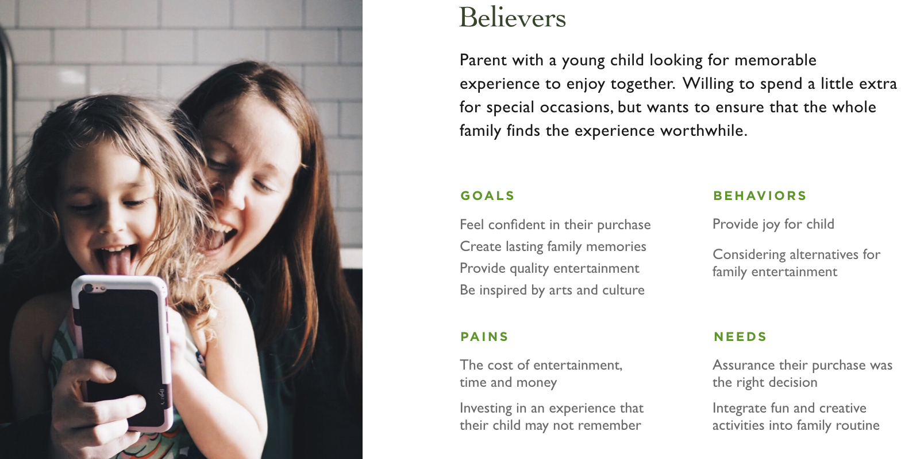
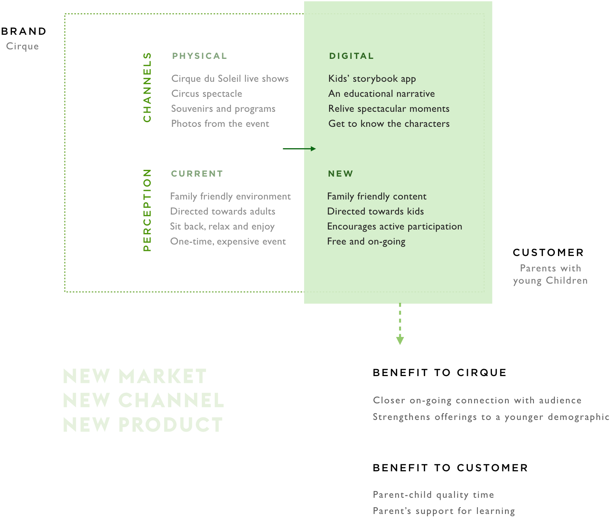

Founded in 1984, Cirque du Soleil was created to reinvent the traditional circus by blending opera and ballet, and eliminating headlining performers and animals. Cirque revitalized the public’s interest in circus entertainment with this new format. In less than 20 years, Cirque created a new market that overtook century-old giants, such as Ringling Bros and Barnum & Bailey.
My contributions towards this project include: designing the user experience of Storybooks, creating wireframes and mockups, building still prototypes, mapping user journeys, producing the personas, researching Cirque’s market and competitors, and writing content.
Who hasn’t seen a Cirque show?
With over 180 million people who have already seen a show, there is rising concern that Cirque du Soleil has failed to continuously innovate in a way that drives continued customer engagement, like they did in the late 90s and 2000s. This is evident in recent loss of revenue due to declined ticket sales of 36.6 percent over the past year.
Cirque begins their creative process for every show by seeking within their diverse team of performers who represent over 40 nationalities. Extraordinary talents like African dancing, Peking opera and Australian didgeridoo, are then harnessed, elaborated and materialized into narrative driven productions. With this, we were able to pinpoint Cirque’s secret ingredient to their artful productions: the ability to bring dreams into reality.
Before further elaboration into the design itself, it is crucial to illustrate my team’s design process after initial research on our client’s problems and strengths. Multiple rounds of research and ideations were completed at different stages of the design cycle during a one-week sprint.
Through our insights gathered from interviews and Yelp reviews, we identified a common pattern: showgoers often could not fully grasp the shows’ storylines. We delved into this concept of using storytelling to prolong memories, which led us to a few videos of parent-child reading behaviors. There we found another a pattern:the parent often resurfaced ideas from the book as a prompt in a new way in order to engage the child more deeply .
Story is often an overlooked aspect of Cirque du Soleil. With over 20 different shows, there was an opportunity to build on this expansive catalogue instead of remaining static in their current model of souvenirs and DVDs. Rather than intervene with the live show itself, our team focused on building upon the narrative and reliving key moments of a particular show. We saw potential to create stronger memories and recall around Cirque that would continue to develop over time.
A digital channel will help customers explore the narrative of the show. By “extending the dream”, it will elongate and strengthen audiences’ connection to Cirque.
We created a brand framework to further explore the relationship between the brand and customer. Using a digital channel, our product provides a new perception, such as the free and ongoing use with the app versus a pricey, one-time experience at a live show. This new perception gives new meaning and value back to the brand.
This new offering benefits both the brand and the customer. For Cirque, this means getting a closer and ongoing connection with their audience, and strengthening their offerings for a younger generations. As for the target customer, the benefit is quality time with one another and an opportunity for parents to encourage a love for reading.
Ideally, customers would circle around this lifecycle, but there’s opportunity to drift off the map and leave the brand after seeing the show. To secure the cycle, our area of intervention adds value to the existing product and puts the brand forefront of their minds so they would be more likely to purchase future tickets or be open to engage with the brand again. Of course, we still had some unanswered questions that we kept in mind during the design process:
To answer these questions we decided to intervene during the moments after the show. We honed in on 2 main touchpoints in the journey to address our concerns about bridging the show to our product. We took advantage of the peak that occurs after the show and early in the day after when the show is still fresh in their minds.
To solidify Storybooks as a keepsake parents and children cherish, it must bring more that just interactive entertainment. We designed our product to be:
Personalized
encourage a sense of ownership with the app and brand with an inscription
Educational
Read aloud and dictionary functionality help facilitate reading and comprehension for children.
Interactive
further engage readers with the content with physical affordances
Explorative
dive deeper into the back story of individual characters of the cabinet
Focusing on less but better
By zeroing in on specific area to intervene, we were able to define the parameters of our design early in the process. This specificity gave us the freedom to dive deep and flesh out the micro moments and interactions inside and around Storybooks.
Usability for young users
Though we gathered insights from parents with younger children and successful storytelling precedents (such as AKQA’s The Snow Fox, WWF Together, and The Fantastic Flying Books of Mr. Morris Lessmore), we did not perform comprehensive user tests to validate our design. Developing empathy for such a user who is only just learning to read is no simple task. To reexamine this work, I would like to begin with a ludic approach. By observing children interact with toys and interfaces, I might find patterns in what entices them and what bores them.